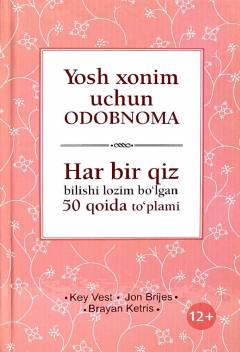

YXZamonaviy qizlar uchun 50 ta muhim odob-etiket qoidalari to'plami.
Ushbu kitob zamonaviy yosh qizlar uchun hayotning turli vaziyatlarida o'zini to'g'ri tutish, muomala odobi va etiket qoidalarini o'rgatadi. Kitobda 50 ta muhim qoida keltirilgan bo'lib, maktab, jamiyat, marosimlar va kundalik hayotda noqulay holatlardan qochish yo'llari ko'rsatilgan. Asar nafaqat qizlarga, balki odobli farzand tarbiyalashni istagan ota-onalarga ham mo'ljallangan.